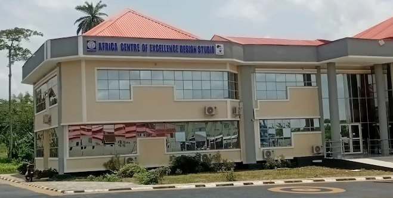
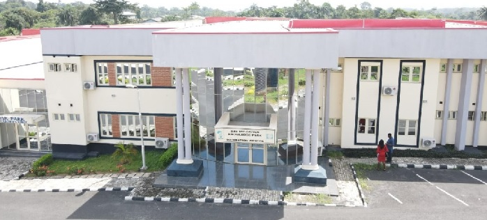

The Telepresence Live Lecture Portal marks an important milestone in our digital teaching strategy at the Africa Centre of Excellence.
By bringing high-quality, synchronous lectures into students’ homes and study spaces, we strengthen teaching continuity, broaden access to expert instruction, and develop resilient learning pathways across faculties.

Our Faculty embraces this Telepresence initiative as a strategic opportunity to enhance learning experiences and academic reach.
Students across departments are encouraged to engage actively with live lectures, review archived resources, and make full use of the digital tools provided to support their academic success.